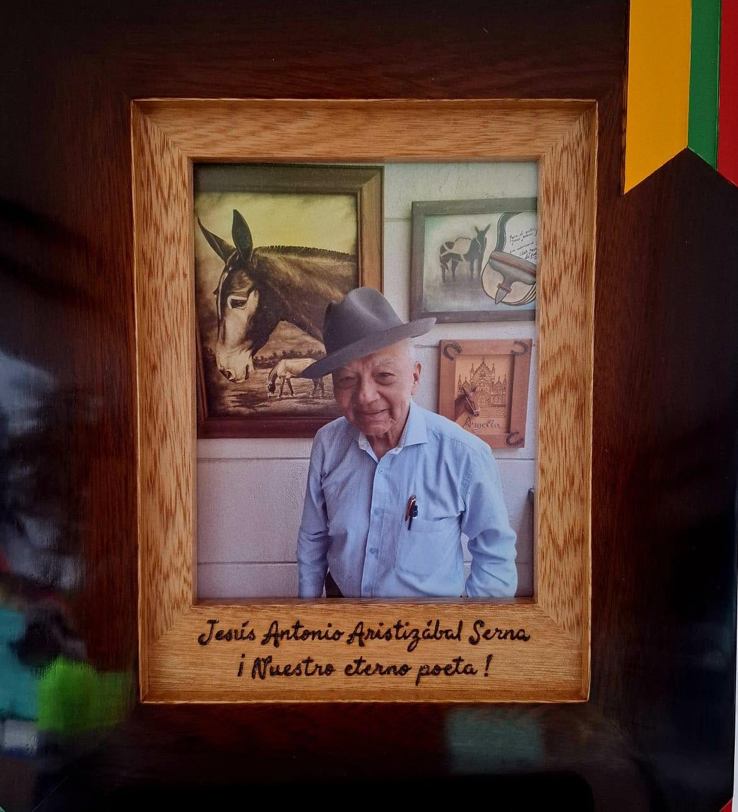
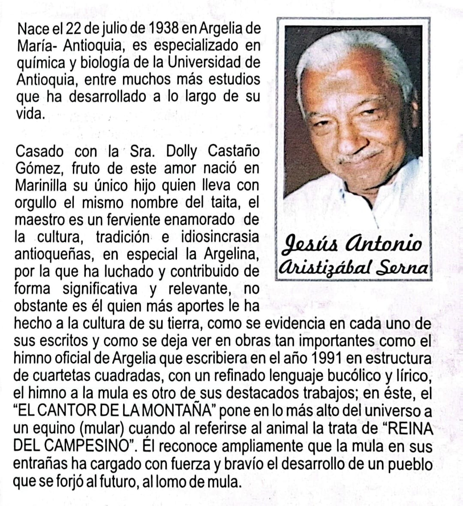
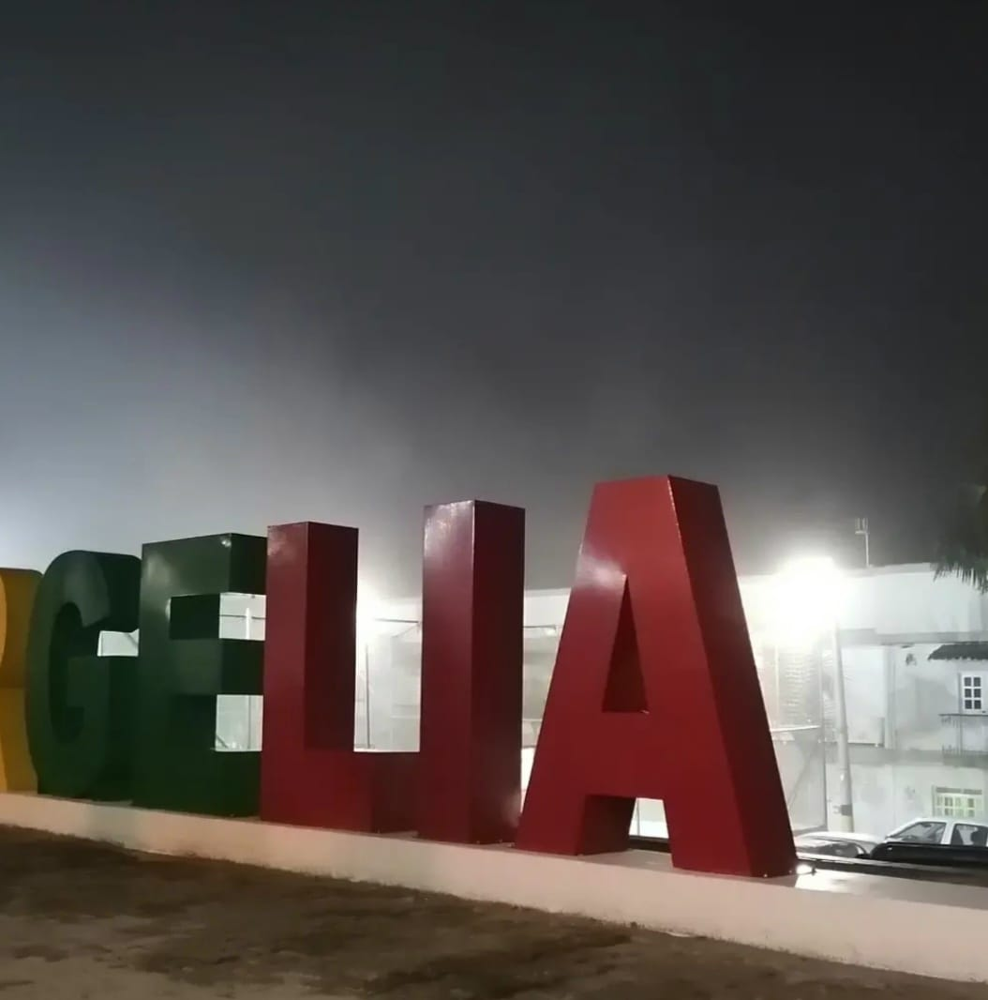
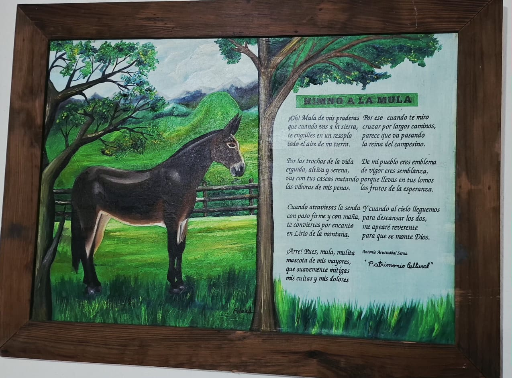
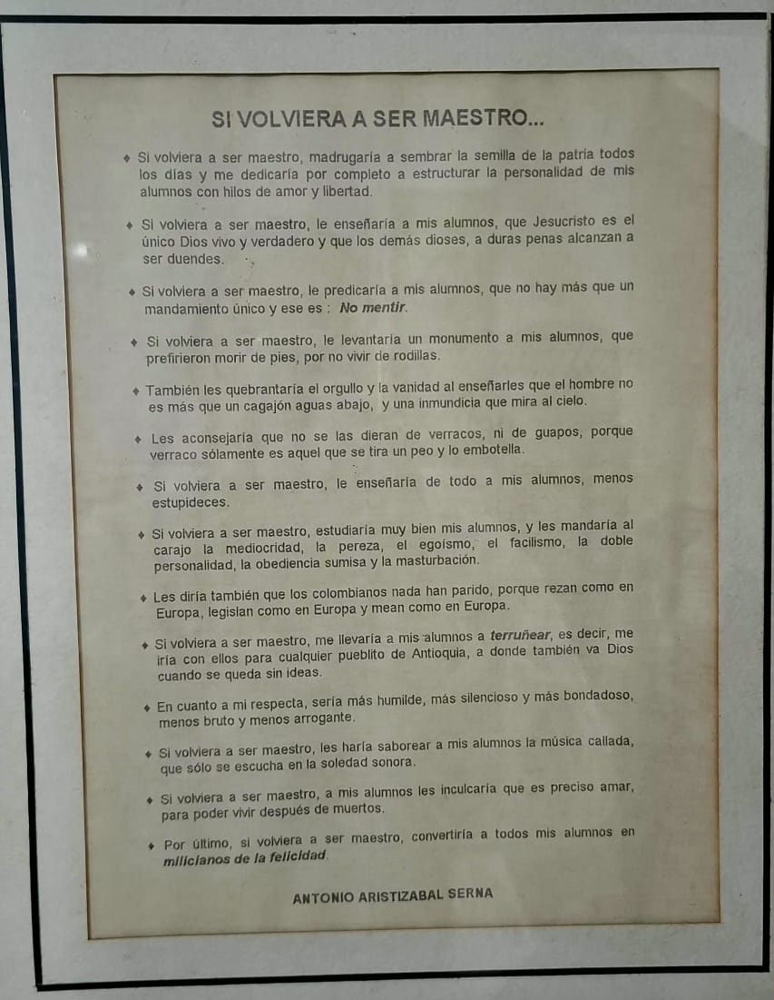
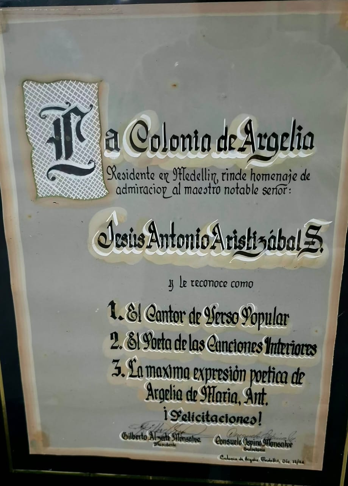
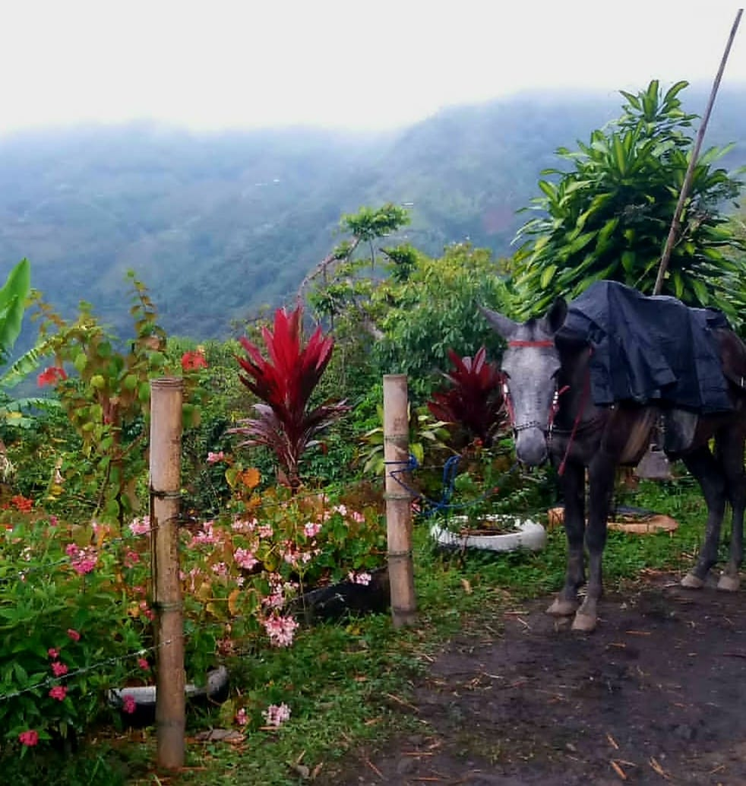

🎧 My voice is your museum guide
Press play to listen to my presentation. When my narration ends, continue exploring the rooms by selecting the buttons below.
Narration: ready to begin.

A life rooted in Argelia
Jesús Antonio is a writer, poet, and troubadour from Argelia. He was born in 1938. He specialized in Biology at the University of Antioquia.
Look closely at his portrait and discover the poet behind these words.

Teacher, writer, and cultural lover
His work includes the composition of the Mule’s Anthem, Argelia’s Anthem, and many important poems. In addition, his legacy as a troubadour has influenced local artistic tradition, and he is a reference for trova in Argelia.
Explore the biography image and notice the details of his life.

The Mule: Queen of the Campesino
Jesús Antonio has been writing since he was a child. He has captured his love for Argelia in songs, poems, and trovas.
Look at the mountain path and the mule, a symbol of Argelia’s rural identity.

Words that honor our roots
In his “Hymn to the Mule,” the poet turns a hardworking animal into a symbol of dignity and hope. His poetry preserves the rural memory of Argelia and gives beauty to everyday life.
Read the poem in the image. Notice how the mule becomes a symbol of the people.

If I Were a Teacher Again…
His reflections speak about humility, freedom, love, courage, and happiness. For him, education was not only about knowledge: it was about shaping human beings with values and a sense of purpose.
Choose one value from this room: humility, freedom, love, courage, or happiness. Which one would you carry into your own life?

Argelia: a poem in the mountains
His contribution to Argelia's cultural identity includes the municipal anthem and poems that celebrate its landscapes, people, and traditions. The church, the mule, the mountains, and the community are part of this shared memory.
Look at this image and think about the traditions that make your own hometown unique.

A memory that lives on
A community keeps its identity alive when it remembers its artists, teachers, stories, and traditions. Jesús Antonio Aristizábal Serna's words remain among the mountains of Argelia.
Thank you for visiting. Before leaving, explore the musical links and answer the museum's final question.
🧭 Museum Challenge
What is the mule a symbol of in Argelia?